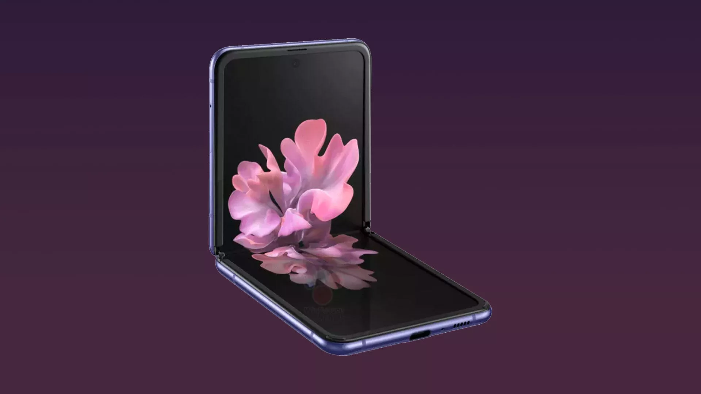

Что показали на Galaxy Unpacked 2020
Сегодня состоялась долгожданная презентация компании Samsung в рамках масштабного мероприятия Galaxy Unpacked 2020. Компания на самом деле представила новое семейство смартфонов Galaxy S20, которые придут на смену S10, второй гаджет в линейке Galaxy Fold с гибким дисплеем - Samsung Galaxy Z Flip, и наушники Galaxy BUDS+.
Стоит отметить, что саму презентацию для ее трансляции по разным площадкам снимали с помощью Galaxy S20 Ultra, что уже говорит о высокой способности съемки. Для наглядного объяснения возможностей камеры смартфонов организаторы приобщили к презентации профессионального фотографа и кинорежиссеров, один из которых имеет Оскар.
Семейство смартфонов Galaxy S20
Как и прогнозировали, семейство смартфонов Galaxy S20 насчитывает 3 модели смартфонов: базовая Samsung Galaxy S20 (с экраном в 6,2 дюйма), улучшенная Samsung Galaxy S20+ (экран — 6,7 дюймов) и топовая Samsung Galaxy S20 Ultra (экран — 6,9 дюймов). Не случайно в сети велись дискуссии о том, какое название будет присуждено новым моделям, ведь многие считали, что компания просто продолжит линейку, выпуская S11, а дальше S12. Но Samsung решила перезапустить ее, назвав семейство гаджетов согласно году.
Различия между моделями заключаются не только в размерах дисплея, но и в технических характеристиках матрицы. В частности, S20 получила Super AMOLED-дисплей с разрешением в 3200x1440 точек и базовую частоту обновления в 60 Гц. На счет частоты обновления стоит отметить, что пользователи неоднократно просили компанию увеличить ее до 90 или 120 Гц. Но незадолго до официального представления появилась информация, что Samsung убрала из последней тестовой версии прошивки смартфона возможность установки кадровой частоты в 120 Гц. Это вызвало возмущение как у экспертов, так и у пользователей. Но следует отметить, что пользователь все же сможет настроить частоту обновления в 120 Гц, включив специальный режим. Улучшенный S20+ оснастили Dynamic AMOLED экраном с таким же разрешением как и базовую модель семейства. А премиальная версия S20 Ultra получила Infinity-O экран Dynamic AMOLED. Обновлен дизайн Samsung Galaxy S20. Нынешний флагман от компании имеет несколько особых отличий в дизайне от своего предшественника. В частности, это: соотношение сторон (20:9 по сравнению с 19:9) — модели серии S20 является более вытянутыми, а дисплей менее изогнутым; расположение фронтальной камеры — в центральной верхней части дисплея (в Samsung Galaxy S10 фронтальная камера располагалась в верхнем углу справа). Следует обратить внимание на заднюю панель нового флагмана. Например, по словам техноблогера Andro News, компания давно потеряла здесь свою самобытность и узнаваемость: "Флагманы Samsung перестали быть самобытными, начиная с модели Galaxy Note10. Раньше их отличала горизонтальная полоска с камерами на задней панели, а потом их аппараты стали как все: Note10 — вылитый Huawei Pro P30, а S20-те подстроились под рынок и слегка изменили решение, предложенное Apple (iPhone 11 Pro Max) и Huawei (Huawei Mate 20 Pro)". Технические характеристики. "Сердцем" смартфонов, в зависимости от региона продаж, является процессор Snapdragon 865 или Exynos 9830 в паре с 8ГБ оперативной памяти (для S20) и 12ГБ для версии S20+. Стоит заметить, что в S20 есть возможность поставить карту памяти объемом до 1 ТБ. Емкость аккумулятора моделей намного больше чем у предыдущей линейки — 4000 мАч в версии Samsung Galaxy S20, 4500 мАч для Samsung Galaxy S20+ и 5000 мАч в Samsung Galaxy S20 Ultra (в то время как у Samsung Galaxy S10 емкость аккумулятора составляла 3100 мАч, а в S10+ — 4100 мАч). Смартфоны работают на базе Android 10, имеют влагозащиту по стандарту IP68 и поддерживают 5G и 4G (в зависимости от модели). Камера смартфонов. Новая линейка смартфонов может похвастаться усовершенствованной камерой, которая, по мнению многих техноблогеров, откровенно лучше камеры смартфонов-конкурентов. "Из года в год китайцы (Huawei) откровенно опускали Apple и Samsung в фотовозможностях. Очевидно, корейцам это надоело и они наконец решили изменить ситуацию", — отмечает на своем YouTube-канале техноблогер с миллионной аудиторией Andro News. Модели S20 и S20+ получили примерно одинаковый арсенал для камер, который поможет улучшить съемку при слабом освещении: 64 Мп (основной объектив), 12 Мп (телефотообъектив) и 12 Мб (сверхширокоугольный объектив). Единственным отличием моделей является наличие ToF (специальный сенсор, который может вычислить точное расстояние до объекта) в S20+.
Более мощной в плане камер есть премиальная модель семейства. Еще до официального представления моделей в интернете начали распространяться слухи о над возможности камеры Samsung Galaxy S20 Ultra. Речь о широкоугольном объективе с разрешением в 108 Мп. Но реализация способности камеры будет несколько отличаться от той, которую мы видели в смартфоне Xiaomi Mi Note10 (получил тот же сенсор). "Простыми словами: 9 пикселей будут объединяться в 1 здоровенный. Исходное расширение будет равняться 12 Мп с широченным динамическим диапазоном", — говорит Andro News. Корейский инсайдер Ice universe сразу после того как появилась информация о возможном разрешении камеры, объяснял, что смартфон благодаря технологии "бининга пикселей" (объединения информации, полученной от соседних пикселей, в суперпиксель, что дает более качественную картинку) способен создавать снимки с размером пикселей 2,4 микрона, что является самым большим в мире размером пикселей, размещенных в смартфоне. Для сравнения, размер пикселей IPhone 11Pro и Pixel 4XL составляет 1,4 микрона. Однако не все эксперты соглашаются с тем, что такое улучшение в камере на самом деле хорошо себя зарекомендует, а не является чем-то бесполезным. В частности, техноблогер из Великобритании ZONEofTECH скептически относится к возможностям производственной способности сенсора при слабом освещении в действии, отмечая, что решить должны уже сами пользователи, попробовав смартфон при разных обстоятельствах. Мысль о возможной бесполезности улучшения камеры именно в виде оснащения ее возможностью 30-кратного и 100-кратного зума, поддерживают и известные инсайдеры. В частности, Max Weinbach и Ishan Agarwal во время просмотра презентации отметили на своих страницах в Twitter, что картинка, приближенная в 30 и 100 раз, выглядит ужасно.

"Если мы говорим о 100-кратном зуме, то лучше использовать штатив, ведь любые движения камеры слишком чувствуются", — отмечает техноблогер Wylsacom на своем YouTube-канале с аудиторией в 8,7 миллионов подписчиков. В конечном результате блок камеры топового смартфона линейки состоит из: основного датчика на 108 Мп, свержширокоугольного на 12 Мп, сенсора ToF и телефотообъектива на 48 Мп (имеет 5-кратный оптический, 10-кратный гибридный и 100-кратный цифровой зум). Также, следует заметить, что фронтальная камера S20 Ultra имеет разрешение 40 Мп (две другие модели — 10 Мп). Другие важные функции. По сравнению с предыдущей серией, линейка S20 имеет усовершенствованную систему распознавания отпечатков пальцев и стереодинамики. Также, все три модели имеют возможность записывать видео в разрешении UHD 4K (по умолчанию), или в 8К до 30 кадров в секунду. Однако по словам техноблогера Wylsacom, это удовольствие будет стоить большого количества места: "8К это все еще баловство сегодня, не думайте, что это прямо "вау". Это ест большое количество памяти, минута такого видео будет весить, как самолет. Модели могут поддерживать функцию быстрой зарядки (15 Вт для S20, 26 Вт для S20+ и 45 Вт — S20 Ultra). Карманный Samsung Galaxy Z Flip Считается, что появление Samsung Galaxy Z Flip обусловлено высокой ценой его премиального предшественника — Galaxy Fold. Поэтому разработчики решили создать еще одну, более доступную для рядового гражданина модель — карманный смартфон с гибким экраном. Дизайн. В отличие от смартфона, который трансформируется в планшет, складываясь по горизонтали, Galaxy Z Flip выходит на рынок в качестве удобного карманного девайса, который в развернутом виде имеет 6,5-дюймовый безрамочный дисплей. Интересно то, что соотношение сторон в развернутом виде составляет 22:9, что по словам техноблогера ZONEofTECH, делает его "наиболее вытянутым" смартфоном современности (ранее таковым считались Sony Xperia 1 и Sony Xperia 5 — 21:9). Новинка имеет ультратонкий гибкий Dynamic AMOLED-дисплей, который устойчив к царапинам и другим механическим повреждениям (дисплей смартфона изготовлен из стекла — Ultra Thin Glass, UNG, вместо пластикового полиамида). Шарнирный механизм способен выдержать до 200 000 раз складывания/раскладывания, а щеточки, расположенные в нем, защищают механизм от пыли и грязи. Стоит отметить, что есть возможность трансформации смартфона в три положения: полностью разложен, flex mode (135º) и разложен под углом 90º — для просмотра разнообразного контента на каждом из экранов и удобного использования смартфона без рук (в частности, можно сделать селфи, поставив гаджет на плоскую поверхность). Технические характеристики. Известно, что смартфон оснащен 8 ГБ оперативной памяти и флеш-накопителем на 256 ГБ. Емкость аккумулятора составляет 3300 мАч. "Нет ничего такого, что делает этот телефон уникальным, кроме того, что он стоит", — говорит ZONEofTECH. В частности, техноблогер объясняет такой вывод малой емкостью батареи и отсутствием нескольких важных для гаджета 2020 года функций. "Я имею очень сильное ощущение того, что жалобы пользователей смартфона, кроме цены, будут касаться именно ужасной батареи", — добавляет эксперт. Камера. Фронтальная камера устройства (в развернутом виде) имеет разрешение 10 Мп. Камеры задней панели (сложенный вид) представлены двумя модулями на 12 Мп (объектив основной камеры и широкоугольный с углом обзора в 123º). По словам техноблогера из Великобритании, поскольку основным 12-мегапиксельным датчиком устройства является Sony IMX 555, качество изображений, снятых с помощью этой двухмодульной камеры, и камер только что представленных моделей S20 и S20+, должна быть идентичной. Другие функции. Гаджет имеет беспроводную зарядку, возможность просмотра видеоконтента в стандарте HDR10+, а также съемки видео в 4K UHD (встроенная суперстабилизация). Стоит заметить, что за безопасность устройства отвечают сканер отпечатка пальцев и возможность распознавания пользователей с помощью лица.
Цена и старт продаж новинок
Старт продаж флагманской линейки S20 в Украине запланирован на 12 марта. Цена будет колебаться от 26 999 грн (S20) до 37 999 грн (S20 Ultra). Можно оформить предзаказ и забрать свой гаджет уже 6 марта вместе с подарком в виде новых наушников Galaxy Buds+. Samsung Galaxy Z Flip выходит в продажу 14 февраля, однако украинские пользователи смогут увидеть новинку не раньше марта. Согласно презентации, цена за гаджет составит 1380 долларов. Вместе с девайсом пользователи получат специальный чехол, наушники и зарядное устройство.